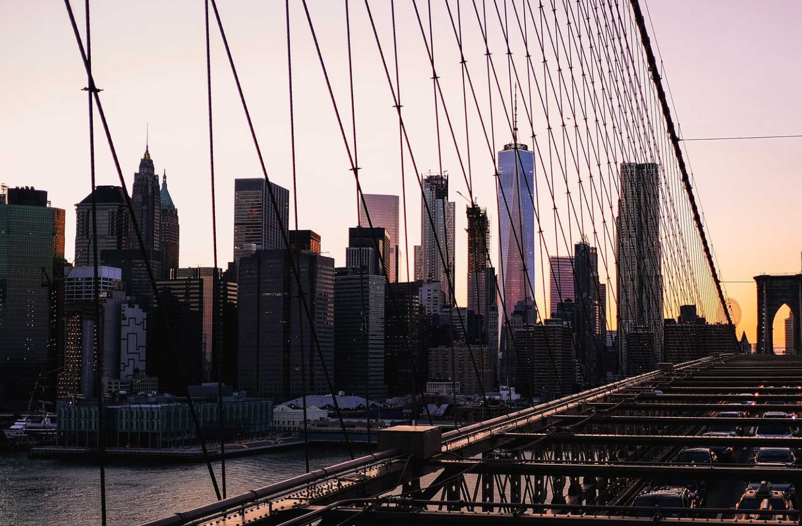
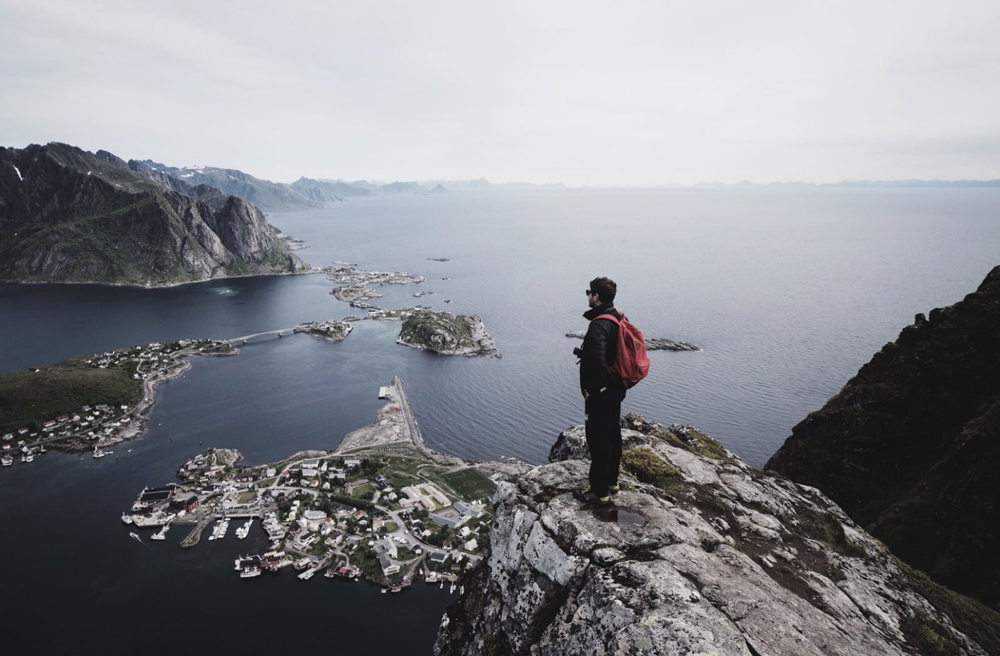
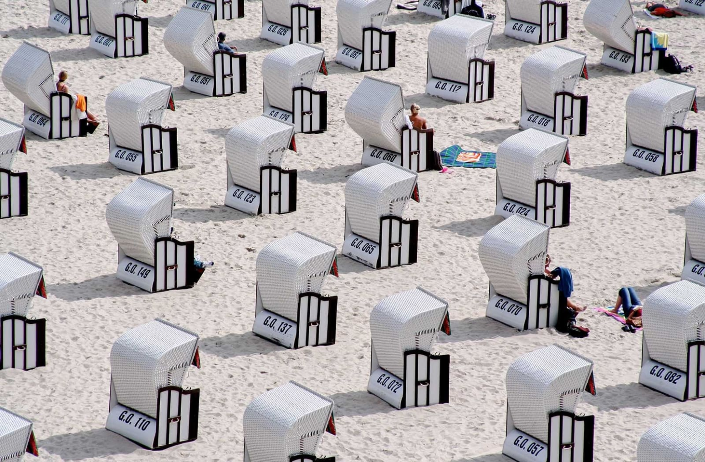
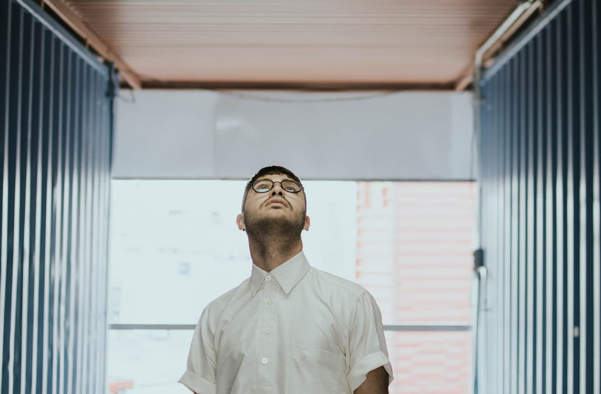
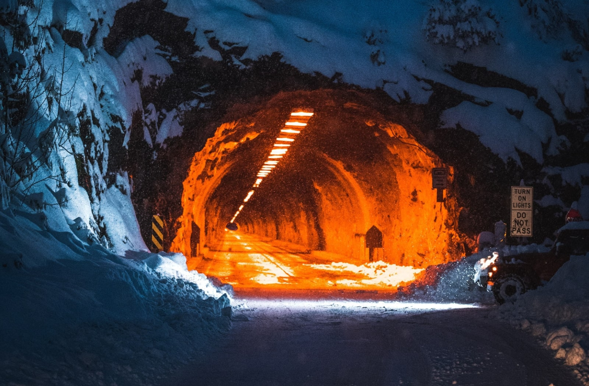
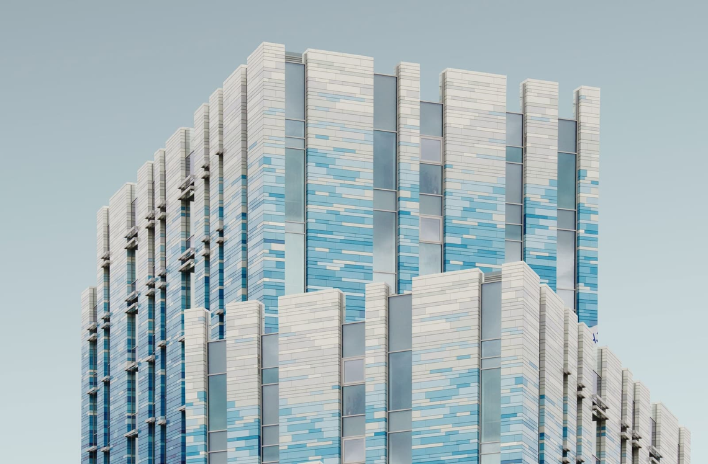
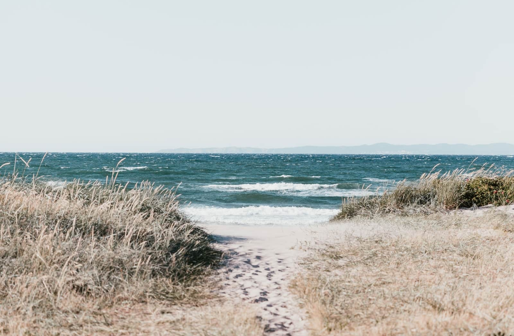

Illustration
Japan House opens
in mountainside to
foster peak
creativity.
Enim omittam qui id, ex quo atqui dictas complectitur.
Nec ad timeam accusata, hinc justo falli id eum, ferri
novum molestie eos cu.
By Reta Torphy

Photography
Helmut Lang celebrates
taxi drivers worldwide in
latest campaign
By Alessandra Ortiz
Photography
Bowlcut launch a new
summer collection that pays
homage to “UK legends”
By Rosanna Ondricka

Photography
Thousands of previously
unseen photographs by Andy
Warhol will be made public
this Autumn
By Annie Lueilwitz

Photography
London-based Yinka Ilori’s storytelling furniture
By Annie Lueilwitz

Photography
Anonymous Israeli art
collective Broken Fingaz
direct music video for U2
and Beck
By Simeon Brekke

Photography
Suzanne Saroff’s meticulously
arranged photographs alter
perceptions
By Reta Torphy

Photography
Japan House opens in
mountainside to
foster peak creativity.
By Reta Torphy
Photography
Helmut Lang
celebrates taxi
drivers worldwide in
latest campaign
By Alessandra Ortiz
Photography
Bowlcut launch a new
summer collection
that pays homage to
“UK legends”
By Rosanna Ondricka
Photography
Thousands of
previously unseen
photographs by Andy
Warhol will be made
public this Autumn
By Annie Lueilwitz
Photography
London-based Yinka
Ilori’s storytelling
furniture
By Annie Lueilwitz
Photography
Anonymous Israeli art
collective Broken
Fingaz direct music
video for U2 and Beck
By Simeon Brekke
Photography
Suzanne Saroff’s
meticulously
arranged
photographs
alter perceptions
By Reta Torphy

Photography
Anu Ambasna’s playful
illustrations
celebrate club
culture, brown bodies and perfect paunches
By Leo Bartell

Graphic Design
A Brief History of the FIFA World Cup Logo
By Clem Onojeghuo

Graphic Design
Need a guide to LA’s graphic design scene?
Shoplifters’ new issue has got your back
By Alessandra Ortiz

Photography
Fred Rowson directs film for Years and Years
By Coby Gottlieb
Illustration
M&C Saatchi and Fontsmith collaborate on
font collection for House of St Barnabas
By Annie Lueilwitz